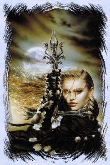

[ Home | Comments | Drakkar Links ]
 |
Fighters and Paladins
By Irish |
A Fighter is probably the best choice for a beginning player. Fighters don't usually worry too much about tactics; they just wade into melee swinging their weapons. Strength is probably the most important attribute for fighters because that determines how hard they will hit.
As with all classes, Constitution is very important for a Fighter because Constitution modifies your Health Points. Fighters need high Health Points (Hps) to be able to weather the physical punishment they often suffer. Fighters get higher Hps gains as they advance through experience levels. Agility is also important for fighters, because that determines how well they can dodge and avoid attacks.
The goal of most Fighters is to become a Paladin. A Fighter who is of Good alignment with Good tendencies can become a Paladin after reaching the eighth Experience Level. Players begin the game with Good alignment and Good tendencies, though some are led astray.
If you wish to become a Paladin, you must seek out the Paladin Trainer and re-dedicate to that order. Any special training the Paladin requires thereafter must be done with the Paladin Trainer, though you may obtain regular skill training with the Fighter Trainer in town. The Paladin Trainer is located on a small island directly south from the eastern tip of Nork.
Paladins enjoy greater psionic resistance and combat ability than ordinary Fighters, as long as they remain faithful to the Forces of Good. If a Paladin slays a non-hostile creature, (i.e. don't kill the dog walking around Nork) the Paladin loses his Paladinhood and will not regain it until he or she Atones for those misdeeds.
Player characters of evil alignment appear red-flagged to the good Paladin, yet Paladins are still forbidden to kill their fellow man. Unless of course, a thief is foolish enough to attempt to steal from the mighty warrior, and is caught.
Both Fighters and Paladins gain a specialization bonus in a class of weapon at 15th, 17th, and 20th experience levels. If ya chose to specialize in a different weapon using each time. However, if you chose to add up all your specializations the levels are different.
Each specialization will increase both the effective skill level and combat penetration power of the chosen weapon . The Barbarian brotherhood are also eligible for this knowledge (although it took some time to convince them not to eat the study material).
You can double specialize in the same weapon at 19th xp level
Fighters and Paladins also gain one attack per round at Experience Levels 5, 10, 15, 20 etc..
Paladins get an additional attack per round when they become Paladins at Experience Level 8.
The Pally runway fashion advice and how to really VOGUE
Unlike their brain dead counterpart Barbarians, Paladins love their gear:) A pally must learn the skills of gearing for different hunts. Some get lazy and don't make the proper attire selection and die. A well dressed pally is a sign of strength.
While a poorly dressed pally is an embarrassment to himself and his brotherhood. The basic outfit consists of: FULL PLATE (Not really a pally till ya have FP). Emiss Bracers, Ninja Gaunts found in DT seem to work better than RD gaunts, Lighting and Acid amulets, Yellow robe and Rak. Use Kitty for ice on the ice plains in frore. Yeti, only time I wear it is on Slith hunts. Basic random combat add combat boots till ya get Dancers. RB Sash if ya can get, if not random combat sash will do. Lastly rings? This is a personal choice also based on what ya have. But in the beggining all you want is the best defense rings ya can lay your hands on. If ya have a choice between a +3/3 or a +5 def,,,dump the 3/3 and proudly wear the +5 def ring. GET BNR's as soon as ya can, a Pally in BNR's is awesome, a small crit with BNR's on can stand in major zoo and barely get hit :)
Advanced gear for Pallys: Slith robes (MA) type, Attack Sash, (some prefer the combat adds of RB sash, I prefer the extra attack). lighting bracers, BNR's, FP (always except for slith hunts) 20 lvl or higher fire/ice ring, Dancers and Hippo boots or haste boots, Power Helm awsome for psi protects and combat adds, Also good if ya lose alignment will protect ya from the stuns a pally is normally immune to. KM5 Hit helms are another good chioce, they can range from 40-60 hit adds. KM5 hit helms offer NO comabat stun protection like a normal hit helm found as random gear in game. But as a pally is immune to combat stuns, who needs the wussie little hit helm anyway! ES ring is a must. I don't wear 5/5 rings, no room, I prefer to wear a +2 or +3 str ring. With proper gear Pallys can go almost anywhere alone in relative safety.
Personal notes on playing a Pally and tactics
Since a pally relies on blocking and greater defenses than any other class then maybe an MA, they take more blows. A Pally's naturaly high Willpower is what protects him/her from anoying combat stuns. Several of the Palls discs are defensive in nature, such as Parry.
Parry is a great skill for IH'ing lairs, entering liars, and most importantly, baiting and protecting other players. I can parry in a zoo and pick up dead players and barely get hit. Parry may also be used for skill gain, by just standing and parrying. No action but set parry in zoo and let them whack away at ya :) I call it the ICQ stance :) A good pally always has a cc scroll in bag, someone has to save the healers every now and again:)
Only draw backs to pallys are two things: One; will never ever hit like a Barb!! However Barbs take much more damage and drain healers much faster than Pallys. Two; Max hits, Pallys have low max hits as compared to Barbs, so in some advanced lairs, a Pally can be a one shot, IF, he gets hit. In big crit lairs where the Beasty has the potential for one shoting ya, I recommend changing rings to the best defense adds ya have. +6 def is the best I know of and with two of these on,,I get to stand around and watch the Barbs take a licking while finshing off a nice plate of Corned beef and cabbage :) Yes, you will reduce your hitting abilities, but if you get one shotted this actually puts you out of action anyway, and in my opinion dead players in big lairs become a burden and increase the risk factor to the remaining party.
Weapon choice is a personal thing. I prefer da Hally, don't need shield and can heal without sacking something to free up a hand. Its a two handed weapon you can heal with while holding. A pally with a shield is revolting to me! A pally is a Shield in of him/herself. However the FAD is moving towards Slicers, Sabres and Excally. When I started this game slicers took everyone on line to kill :) Now it seems a slicer is as routine as killing thumpers on -4. So, what has happened is this, the average players are getting much bigger and better gear that was unavalible before is now abundant. I intend to continue with me trusty Hally,,I wana know what a Pally can do when Multistriking, Powerstrike and Armorstrike with a Hally :)
Once primary weapon is selected I recommend skilling to at least skill 10 in MA. MA skill will enhance a Pally's true form of blocking attacks. Ma skill and Parry makes you damn near impervious to attacks other than PSI in nature. I know holding a weapon in hand is supposed to prevent you from blocking, but MA skill made a noticable difference to my crit. Maybe my ability to block with the hally was increased some how, don't know for sure. I can only tell you what my experiance was/is. Most of the above is certainly opinion, and based through my eyes and some input from others. It is more than likely that other players can and will take exception to certain things. My style of playing is for the long run, I am not a big gear monger, and I dont push myself for exp or skill. I hunt fairly conserative and seek knowledge before gear. I will not do a hunt unless I am sure I understand the hunt and the risks. For these reasons, and that I spend a great amount of time helping others I am not nearly as big as I could be for the time I have played this game.
Paladin Skill Gains
The following lists some of the skills and Skill Level gains for the Paladin Profession.
15 Charge
All warriors who have mastered a weapons class (Skill rank Master or higher) may also
Charge opponents. This command will move the warrior towards the creature and let loose
with a full combat swing. The maximum distance available through a Charge is directly
related to the skill level of the warrior. Charge is not a focus and therefore will not be
lost if ya lose alignment. All focuses are lost when ya lose alignment.
To Charge, select Charge from the attack menu and click on the ID box of the creature:
17 Focus Parry
Paladins with a weapon skill level of Beholder of the Art can focus their energy into
Parry, in which the Paladin focuses solely on fending off blows. The defensive position is
maintained until you use another command. Type focus parry.
18 Focus Strike
Paladins who attain the weapon skill level of High Warrior can focus their energy away
from defense and into a single powerful blow, which often penetrates armor more
effectively than normal combat strikes. Type focus strike and then click the Identity box
of your opponent.
19 Focus Blindstrike
Paladins who attain the weapon skill level of Specialist can focus their energy when
vision fails, either through blindness or a dark room, to strike a random opponent in the
Paladin's hex. highly-skilled Paladins can strike a specific opponents select focus
blindstrike to focus a random blindstrike. select focus blindstrike and then click the
Identity box of your opponent to focus a specific blindstrike.
20 Focus Multistrike
Paladins who reach the weapon skill level of Beholder of the Art can focus their energy to
strike multiple creatures at the same time. The number of creatures hit depends on the
Paladin's number of attacks. Type focus multistrike.
21 Focus Boost
Paladins who attain the weapon skill level of Initiate of Stance can slip into a trance
that boosts their strength and agility by two points. Type focus boost.
22 Focus Powerstrike
Paladins who attain the weapon skill level of Student of Stance can focus their energy
away from defense and into a single devastating blow. Type focus powerstrike and then
click the Identity box of your opponent.
23 Focus Defend
Paladins who attain the weapon skill level of Master of Stance can focus their own
defensive energy toward the defense of another character. A singularly noble action, this
decreases the Paladin's own defenses and may cause him or her to fall prey to the same
opponent. Type focus defend and then click the Identity box of the character to defend.
24 Focus Superboost
Paladins who attain the weapon skill level of Initiate of Form can slip into a trance that
boosts their strength and agility by five points and increases their move rate by one
step. Focus Superboost is stressful and requires concentration time. Type focus
superboost.
25 Focus Armorstrike
Paladins who attain the weapon skill level of Student of Form can focus their energy into
a combat strike that damages the opponent's armor and weapon. Type focus armorstrike and
then click the Identity box of your opponent.
26 Focus Ultraboost
Paladins who attain the weapon skill level of Master of Form can slip into a trance that
boosts their strength and agility by eight points and increases their move rate by two
steps. Focus Ultraboost is very stressful and requires much concentration. Type focus
ultraboost.
27 Focus Maxstrike
Paladins who attain the weapon skill level of Initiate of Style can focus their energy
away from defense to a great combat blow inflicting maximum damage. Type focus maxstrike
and then click the Identity box of your opponent.
28 Focus Disarm
Paladins who attain the weapon skill level of Student of Style can focus their energy to
tear the weapon from an opponent's hands and throw it to the ground. Disarming is very
difficult and may require several attempts. Type focus disarm and then click the Identity
box of your opponent.
29 Focus Pierce
Paladins who attain the weapon skill level of Master of Style can focus their energy away
from defense and into the ultimate in armor piercing attacks. This attack form directs all
of the Paladin's energies into a single thrust that often pierces armor or other physical
protection and causes severe damage to an opponent. Type focus pierce and then click the
Identity box of your opponent.